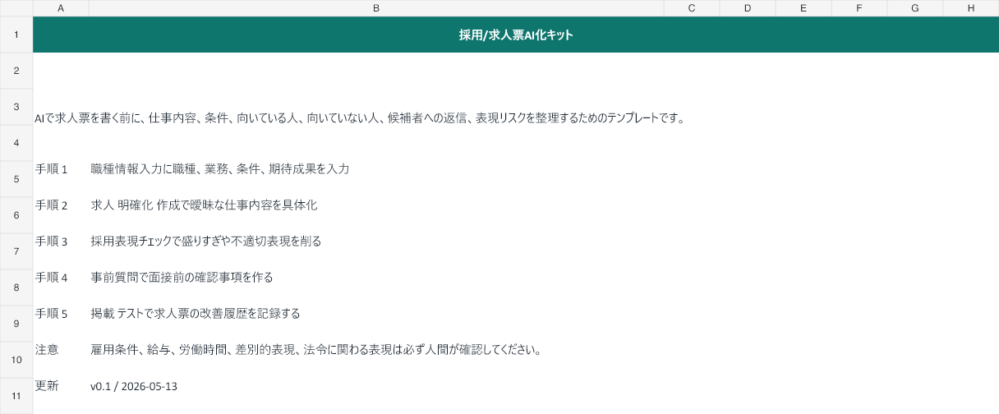

対象
求人票や候補者返信を改善したい小規模事業者・採用担当
よくある詰まり
求人票は盛るほど応募後のミスマッチが増え、曖昧すぎると応募が来ない。
使い方
職種情報入力に職種、業務、条件を入力する
職種情報入力に職種、業務、条件を入力する
求人具体化
求人具体化で曖昧な仕事内容を具体化する
採用表現チェック
採用表現チェックで不適切表現を削る
安全ライン
AIは下書きと整理に使い、送信、公開、契約、価格、効果保証、個人情報に関わる判断は人間が確認します。

求人票や候補者返信を改善したい小規模事業者・採用担当
求人票は盛るほど応募後のミスマッチが増え、曖昧すぎると応募が来ない。
職種情報入力に職種、業務、条件を入力する
求人具体化で曖昧な仕事内容を具体化する
採用表現チェックで不適切表現を削る
AIは下書きと整理に使い、送信、公開、契約、価格、効果保証、個人情報に関わる判断は人間が確認します。